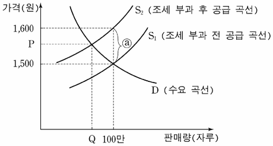

조세전가
지문을 먼저 읽고, 이해가 막히는 문단에서 ‘그림으로 보기’를 누르세요. 그림은 문단을 따라 바뀝니다.
1문단정부는 조세를 부과해 재정 사업을 위한 재원을 마련한다. 그런데 조세 정책의 원칙 중 하나가 공평 과세, 즉 조세 부담의 공평한 분배이기 때문에 누구에게 얼마의 조세를 부과할 것인가는 매우 중요하다. 정부는 특정 조세에 대한 납부자를 결정하게 되면 조세법을 통해 납부 의무를 지운다. 그러나 실제로는 납부자의 조세 부담이 타인에게 전가되는 현상이 흔히 발생하는데, 이를 ‘조세전가(租稅轉嫁)’라고 한다.
2문단[A] 정부가 볼펜에 자루당 100원의 물품세를 생산자에게 부과한다고 하자. 세금 부과 전에 자루당 1,500원에 100만 자루가 거래되고 있었다면 생산자는 총 1억 원의 세금을 납부해야 할 것이다. 이로 인해 손실을 입게 될 생산자는 1,500원이라는 가격에 불만을 갖게 되므로 가격을 100원 더 올리려고 한다. 생산자가 불만을 갖게 되면 가격이 상승하기 시작한다. 그러나 가격이 한없이 올라가는 것은 아니다. 가격 상승으로 생산자의 불만이 누그러지지만 반대로 소비자의 불만이 증가하기 때문이다. 결국 시장의 가격 조정 과정을 통해 양측의 상반된 힘이 균형을 이루는 지점에 이르게 되며, 1,500원～1,600원 사이에서 새로운 가격이 형성된다. 즉 생산자는 법적 납부자로서 모든 세금을 납부하겠지만 가격이 상승하기 때문에 자루당 실제 부담하는 세금을 그만큼 줄이게 되는 셈이다. 반면에 소비자는 더 높은 가격을 지불하게 되므로 가격이 상승한 만큼 세금을 부담하는 셈이 된다.
3문단한편, 조세전가가 한 방향으로만 발생하는 것은 아니다. 동일한 세금을 소비자에게 부과한다고 하자. 소비자는 자루당 1,500원을 생산자에게 지불해야 하므로 실제로는 1,600원을 지출해야 한다. 이에 대해 소비자는 불만을 가질 수밖에 없다. 소비자의 불만이 시장에 반영되면 시장의 가격 조정 기능이 작동하여 가격이 하락하게 되며, 최종적으로 소비자는 가격 하락 폭만큼 세금 부담을 덜 수 있게 된다. 즉 정부가 소비자에게 세금을 부과한다 해도 생산자에게 조세가 전가된다.
4문단그렇다면 양측의 실제 부담 비중은 어떻게 결정될까? 이는 소비자나 생산자가 제품 가격의 변화에 어떤 반응을 보이는가에 따라 달라진다. 예를 들어 가격 변화에도 불구하고 소비자가 구입량을 크게 바꾸지 못하는 경우, 어느 측에 세금을 부과하든 ㉠소비자가 더 많은 세금을 부담하게 된다. 생산자에게 세금을 부과할 때에는 가격 상승 요구가 더욱 강하게 반영되어 새로운 가격은 원래보다 훨씬 높은 수준에서 형성될 것이다. 즉 생산자의 세금이 소비자에게 많이 전가된다. 그러나 소비자에게 세금을 부과할 때에는 가격 하락 요구가 잘 반영되지 않아 가격이 크게 떨어지지 않는다. 그로 인해 소비자가 대부분의 세금을 부담하게 된다. 한편, 가격 변화에도 불구하고 생산자가 생산량을 크게 바꾸지 못하는 경우에는 누구에게 세금이 부과되든 ㉡생산자가 더 많은 세금을 부담하게 될 것이다. 이러한 조세전가 현상으로 인해 정부는 누가 진정한 조세 부담자인지를 파악하는 데 어려움을 겪을 수밖에 없다.
[A]를 <보기>와 같이 그래프로 그렸다. 이를 이해한 내용으로 적절하지 않은 것은?
